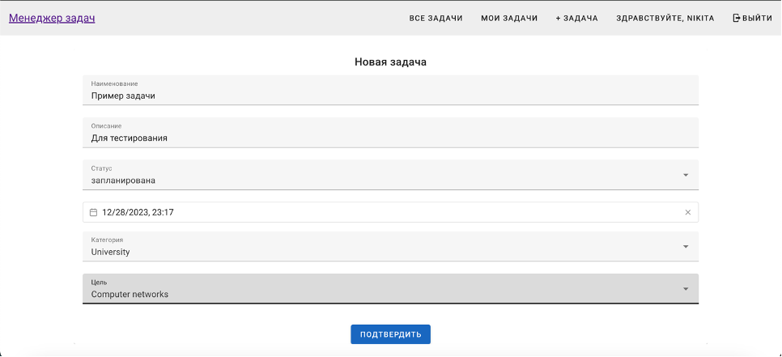

Task manager: фронтенд на vue.js для приложения по управлению задачами.
В работе использовался vue-router для маршрутизации. Vuex для управления состоянием и централизованного хранилища данных для всех компонентов. Axios для HTTP-запросов. Vuetify для UI. Реализован следующий функционал: - Вход/регистрация и выход - Просмотр списка всех задач и каждой задачи - Просмотр мои задач и управление статусом задачи - Создание новой задачи - Назначение задачи исполнителю - Возможность оставить/удалить комментарий - Удаление задачи
Продемонстрирую работу в браузере, и пройдемся по коду на примере реализации создания новой задачи.

- Роутер (router/index.html)
{
path: '/add_task',
component: () => import('@/layouts/default/Default.vue'),
children: [
{
path: '',
name: 'CreateTask',
component: () => import('@/views/task/CreateTask.vue'),
},
],
}
Тут настройка маршрута для создания новой задачи и при переходе по адресу /add_task будет отображаться компонент CreateTask.vue.
- Компонент (CreateTask.vue)
<template>
<v-container class="fill-height">
<v-responsive class="align-center text-center">
<v-alert
v-if="errorMessages.length > 0"
v-for="(error, index) in errorMessages"
:key="index"
type="error"
dismissible
>
{{ error }}
</v-alert>
<v-form @submit.prevent="handleCreateTask">
<v-card>
<v-card-title>Новая задача</v-card-title>
<v-card-text>
<v-text-field
v-model="title"
label="Наименование"
outlined
required
></v-text-field>
<v-text-field
v-model="description"
label="Описание"
outlined
required
type="text"
></v-text-field>
<v-select
v-model="completed"
:items="taskStatuses"
label="Статус"
outlined
required
></v-select>
<VueDatePicker class="mb-4" outlined required placeholder="Срок выполнения" v-model="deadline"></VueDatePicker>
<v-select
v-model="category"
:items="categoryOptions"
label="Категория"
outlined
required
item-value="id"
></v-select>
<v-select
v-model="aim"
:items="aimOptions"
label="Цель"
outlined
required
item-value="id"
></v-select>
</v-card-text>
<v-flex class="text-xs-center" mt-5>
<v-btn color="primary" type="submit">Подтвердить</v-btn>
</v-flex>
</v-card>
</v-form>
</v-responsive>
</v-container>
</template>
Код компонента, который предоставляет форму для создания новой задачи. Используются компоненты vuetify.
- Создание задачи (methods)
methods: {
handleCreateTask() {
this.loading = true;
let formattedDate = ""
if (this.deadline !== "" && this.deadline !== null)
formattedDate = this.deadline.toISOString().split('T')[0] + ' ' + this.deadline.toTimeString().split(' ')[0];
let newTask = {
title: this.title,
description: this.description,
deadline: formattedDate,
completed: this.completed,
category: this.category,
aim: this.aim
}
this.$store.dispatch("task/addTask", newTask).then(
() => {
this.$router.push("/tasks");
}).catch(error => {
this.loading = false;
if (error.response && error.response.data && error.response.data.message) {
this.errorMessages.push(error.response.data);
} else {
const errors = Object.values(error.response.data).flat();
errors.forEach(errorMessage => {
this.errorMessages.push(errorMessage);
});
}
});
},
В этом методе обрабатываем создание задачи. Данные из формы собираются в объект newTask, и вызывается действие из хранилища (this.$store.dispatch("task/addTask", newTask)), чтобы отправить данные на сервер.
- Сервис для работы с задачами (task.service.js)
addTask(task) {
return axios
.post(API_URL + 'tasks/create/', {
title: task.title,
description: task.description,
deadline: task.deadline,
completed: task.completed,
category: task.category,
aim: task.aim
})
.then(async response => {
if (response.status === 200) {
return response.data;
} else if (response.status === 400) {
const errors = await response.data;
if (typeof errors === 'object') {
errorMessages.value = Object.values(errors).flat();
} else {
errorMessages.value = [errors];
}
}
else {
}
});
}
Сервис отправляет запрос на сервер для создания новой задачи. Axios.post для http-запроса.
- Хранилище (task.module.js)
addTask({ commit }, task) {
return TaskService.addTask(task).then(
task => {
commit('addTask');
return Promise.resolve(task);
},
error => {
commit('addTaskFailure');
return Promise.reject(error);
}
);
},
Обработка результата запроса на сервер и, если все успешно, то вызывается мутация для обновления состояния хранилища.
- Интеграция компонента (view)
<template>
<CreateTask />
</template>
<script setup>
import CreateTask from '@/components/task/CreateTask.vue'
</script>
Здесь происходит интеграция компонента создания задачи в представление. Я использую